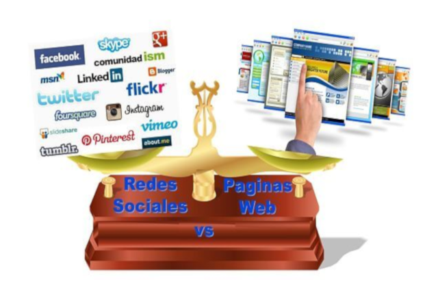
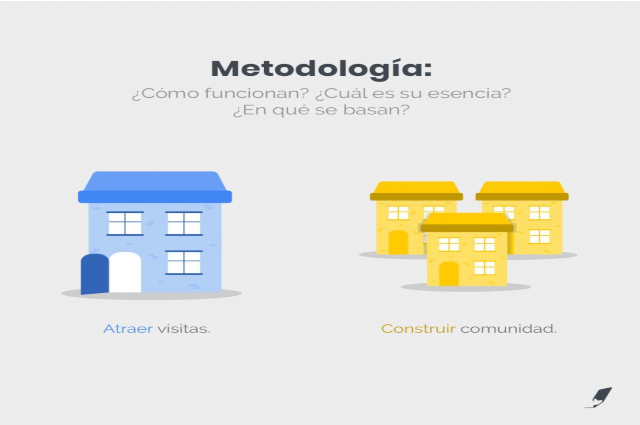
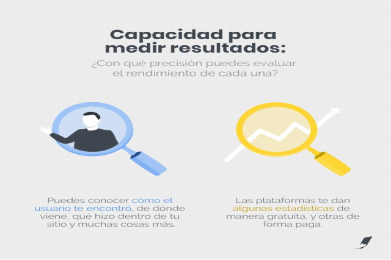
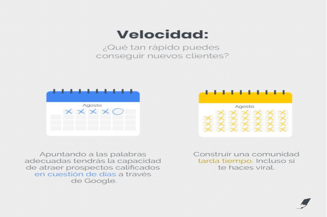
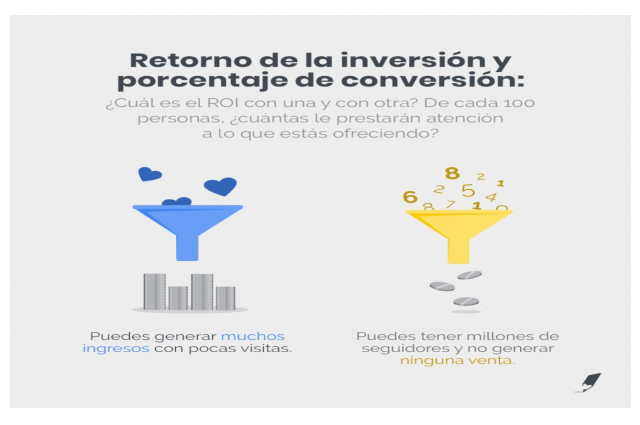
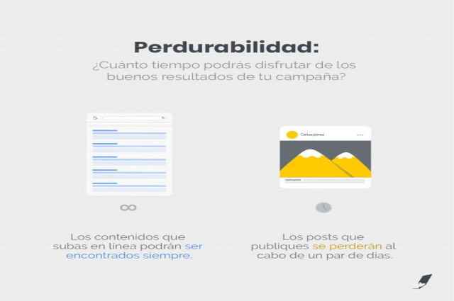

18 Febrero, 2022
Páginas web o redes sociales: ¿Cuál es más importante?
Si quieres atraer clientes potenciales, generar miles de visitas cada día y cerrar más ventas, las páginas web son el camino para ti.
Si deseas construir una comunidad, conversar con tu audiencia y apuntar a la viralidad, las redes sociales quizás sean la opción más adecuada.

18 Feb, 2022
¿Cuál es la diferencia entre una página web y una red social?
Una página web es de tu propiedad, mientras que tu cuenta en una red social le pertenece al creador de la plataforma.
Una página web es un pedazo de terreno que compras en Internet.
Una cuenta en una red social es un espacio que alquilas y que puede dejar de ser tuyo de un día para otro.
Una página web te servirá para ser encontrado a través de buscadores (Google). Una red social será muy útil para conectar con personas que comparten tus mismos intereses y luego regar tu mensaje.
En el mundo digital, para promocionar los productos o servicios de tu empresa, tienes dos grandes opciones:
1.- Construir un sitio web.
2.- Abrir una cuenta en alguna red social.
¿En qué deberías invertir tu tiempo y tu dinero?
A decir verdad, la estrategia perfecta incluye tanto al sitio web, como a las RRSS.
No obstante, a continuación compararemos ambas herramientas de marketing y publicidad para que puedas tomar la mejor decisión posible, en caso de que sólo puedas elegir una de las dos.
En este artículo, tal y como hicimos en nuestro texto sobre Inbound vs. Outbound Marketing, compararemos estas dos alternativas según 5 variables:
1) Metodología: ¿Cómo funcionan? ¿Cuál es su esencia? ¿En qué se basan?
Página web: Atraer visitas.
Redes sociales: Construir comunidad.

18 Feb, 2022
2) Capacidad para medir resultados: ¿Con qué precisión puedes evaluar el rendimiento de cada una?
Página web: Puedes conocer cómo el usuario te encontró, de dónde viene, qué hizo dentro de tu sitio y muchas cosas más.
Redes sociales: Las plataformas te dan algunas estadísticas de manera gratuita, y otras de forma paga.

18 Feb, 2022
3) Velocidad: ¿Qué tan rápido puedes conseguir nuevos clientes?
Página web: Si apuntas a las palabras adecuadas y no hay competencia en esos términos en particular, estarás en la capacidad de atraer a prospectos calificados en cuestión de días a través de Google.
Redes sociales: Construir una comunidad tarda tiempo. Incluso si te haces viral.

18 Feb, 2022
4) Retorno de la inversión y porcentaje de conversión: ¿Cuál es el ROI con una y con otra? De cada 100 personas, ¿cuántas le prestarán atención a lo que estás ofreciendo?
Página web: Puedes generar muchos ingresos con pocas visitas.
Redes sociales: Puedes tener millones de seguidores y no generar ninguna venta.

18 Feb, 2022
5) Perdurabilidad: ¿Cuánto tiempo podrás disfrutar de los buenos resultados de tus campañas?
Página web: Los contenidos que subas en línea podrán ser encontrados siempre.
Redes sociales: Los posts que publiques se perderán al cabo de un par de días.
18 Feb, 2022
Páginas web vs redes sociales: Conclusión
Una página web te servirá para producir y almacenar información relevante para tus clientes o prospectos. Es una casa en Internet que atraerá invitados constantemente.
Las redes sociales te ayudarán a conectar con personas interesadas con aquello que tú haces. Como dice GaryVee, son una especia de boca a boca, pero con esteroides.
Para averiguar qué plataforma tiene más valor, vamos a comparar el siguiente escenario.
Si pudieses elegir entre estas dos opciones, ¿qué escogerías?:
a) 100.000 seguidores en una red social.
b) Aparecer en la primera página de Google cuando un potencial cliente busque algo relacionado con tu negocio.
Ejemplo
Supongamos que montaste un negocio de relojes y, luego de hacer un estudio de palabras clave, descubriste que el término “relojes con estilo” lo buscan 200.000 veces todos los meses.
¿Qué pasaría si lograses posicionarte de primero en Google para ese término?
Atraerías a esas 200.000 personas, ¿no es así?
Ahora, recordemos la frase de Cyrus Shepard:
“Al contrario del marketing tradicional, donde uno presiona/interrumpe al usuario con un mensaje, el SEO te permite entregar justo el contenido que el usuario está buscando, exactamente en el mismo momento en que lo está buscando”.
Entonces, estarías atravesándote frente a las personas que quieren un reloj como el que tú vendes, justo cuando ellos están buscando un reloj como el que tú vendes.
Las redes sociales, a pesar de ser una herramienta extraordinaria, no nos permiten hacer esto.
Podemos tener muchísimos seguidores en nuestra red social, pero pasan tres cosas:
1.- El engagement rate suele ser muy bajo. Cuentas con millones de seguidores reciben pocas interacciones.
2.- La gente no entra a las redes para comprar algo. Entra para ver en qué andan sus amigos o artistas favoritos.
Entonces, puedes tener tu cuenta de relojes y publicar fotos finísimas, pero eso no te acercará a la venta porque toda tu base de seguidores, cuando entre a IG, no estará pendiente de si comprarte o no el reloj.
En cambio, si una de esas personas consultase en Google sobre relojes, significaría que sí está pendiente de adquirir un reloj y ahí es cuando tú podrías aparecértele en frente.
Recuerda: cuando la gente acude a Google significa que está buscando algo. Cuando esa misma gente está en las redes sociales simplemente puede estar matando el tiempo.
Esa es la gran diferencia.
3.- Las redes pueden ser herramientas valiosísimas para el inbound marketing (si compartes contenido de valor), pero su contenido no es indexable.
¿Qué significa esto?
Que lo escribas hoy es muy difícil que sea encontrado por una persona que use Instagram en uno o dos meses.
No queda registrado en una base de datos como sí ocurre con los buscadores, que son como bibliotecas.
En Google los contenidos trabajarán por ti a toda hora y en todo momento. Ellos no se enferman, no piden días libres, no tienen imprevistos y no cambian de humor.
Básicamente son relacionistas públicos preparados las 24/7 para atender de la mejor forma a un posible cliente.
Ahora, gracias a los textos y videos que produzcas, ya no tendrás que repetir lo mismo una y otra vez. El contenido trabajará por ti.
Si te dedicas a ser un experto en tu campo y a traducir esos conocimientos en contenidos, dominarás Google y serás la principal referencia dentro de tu mercado.